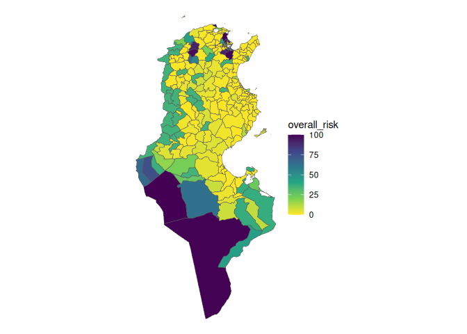

The riskintroanalysis R package provides functions to analyse the risk of introduction of animal diseases within a geographic area. It is intended to be useful as a stand-alone package, but also to integrate directly into the riskintro Rshiny app. The motivation behind these projects is to easily conduct geospatial risk analysis using existing data from WAHIS (World Animal Health Information System).
2 Installation
You can install the development version of riskintroanalysis like so:
remotes::install_github("riskintroanalysis")3 Analysis
The package provides functions for certain risk of introduction analysis, but requires external data to be provided. The functions are inteded to be flexible, but each analytical method requires the corresponding data.
The RShiny app riskintro provides a graphical interface for the following analyses.
The central datasets to each method are:
- The emission risk score table, which provides a risk of emission diseases (that is to say the risk of a disease spreading from that country). This score is based on summary of risk factors, many of which are available from WAHIS (see more here). This data exists for many countries around the world, and is augmented with geospatial data corresponding to each country’s administrative boundaries.
- The area of interest, Geospatial data defining the borders of a region. This is the area for which we want to know the risk of introduction of a disease. The most common data is that of a country and its administrative boundaries, including internal boundaries. For example, French departments, or German states.
These two datasets are used along with other data to calculate risk scores for the following analyses:
- Border lengths: using the length of shared borders the risk of introduction is weighed comared to each neighbouring country and their risk score.
- Border entry points: using an additional dataset that defines broder entry points, risk of introduction is weighted by legality of entry point.
- Animal mobility: using an additional dataset defining legal animal commerce flows, risk of introduction is weighed based on the number of animals entering the area.
The forth analysis method does not use emission risk data, just data from a road accesibility raster and the epidemiological units:
- Road access risk: using raster data of the world, applied to the area of interest, risk of introdcution is infered through road acces. An area more accessible by road is considered higher risk.
These methods of analysis are intended to be used together or individually to montor is risk of introduction. This is done by ensuring risks are using the same scale (for example between 0 and 100) and they can easily added to a table of risk.
Additionally, some tools are provided to add other risk (such as the ones not show above). Currently supported are pre-calculated risks or risks from raster files. Which can be rescaled and added to the risk table as well. This allows of the risk analyst the flexibility to add other risks outside of the default risks.
4 Example 1: Tunisia
riskintroanalysis is intended to be used alongside sf geospatial data manipulation, dplyr for general data manipulation, and terra for raster data.
4.1 Core datasets
The two core datasets are emission risk factors and epidemiological units. The first is used in three out of four analysis methods, the second is used in all of them.
4.1.1 Emission Risk Factors:
Emission risk factors are used to create an overall emission risk value that is associated with the possible spread of a disease from that country. It is made up of multiple scores which are weighted.
Here, we create two entries in the emission risk table for Algeria and Libya. The absence of government oversight in each area represents an increased risk of emission. Therefore a 1 means there is additional risk associated with this score, and a 0 means no additional risk.
library(dplyr)
library(riskintrodata)
library(riskintroanalysis)
#> Loading required package: ggplot2
library(sf)
algeria <- erf_row(
iso3 = "DZA",
country = "Algeria",
disease = "Avian infectious laryngotracheitis",
animal_category = "Domestic",
species = "Birds",
disease_notification = 0,
targeted_surveillance = 1,
general_surveillance = 0,
screening = 1,
precautions_at_the_borders = 1,
slaughter = 1,
selective_killing_and_disposal = 1,
zoning = 1,
official_vaccination = 1,
last_outbreak_end_date = as.Date("30/06/2023"),
commerce_illegal = 0L,
commerce_legal = 0L
)
#> ✔ All data in "emission_risk_factors" valided.
libya <- erf_row(
iso3 = "LBY",
country = "Libya",
disease = "Avian infectious laryngotracheitis",
animal_category = "Domestic",
species = "Birds",
disease_notification = TRUE,
targeted_surveillance = 1,
general_surveillance = 0,
screening = 1,
precautions_at_the_borders = 0,
slaughter = 1,
selective_killing_and_disposal = 1,
zoning = 1,
official_vaccination = 1,
last_outbreak_end_date = as.Date("30/06/2019"),
commerce_illegal = 0L,
commerce_legal = 1
)
#> ✔ All data in "emission_risk_factors" valided.
wahis_erf <- get_wahis_erf(
disease = "Avian infectious laryngotracheitis",
animal_category = "Domestic",
species = "Birds"
)
#> ✔ All data in "emission_risk_factors" valided.
#> ✔ WAHIS emission risk factors dataset has 62 entries for `disease = Avian infectious laryngotracheitis`, `species = Birds`, and `animal_category = Domestic`.
emission_risk_factors <- dplyr::bind_rows(
algeria,
libya,
wahis_erf
)
emission_risk_table <- calc_emission_risk(emission_risk_factors = emission_risk_factors)
hist(
emission_risk_table$emission_risk,
main = "Histogram of emission risk score",
xlab = "Emission risk scores"
)It is also useful to join the world_sf geospatial dataset to emission risk for later.
4.1.2 Epidemiological Units
Epidemiological units (or epi units for short) is the term used for geographical areas of interests for analysing understand the risk of introduction. This data has no defaults and needs to be provided by the user, however packages like geodata can be used to get them. For this example, a shapefile containing the administrative boundaries of Tunisia exists in the riskintrodata package for demonstration purposes.
The Tunisia epidemiological units dataset will be essential to the following analysis methods.
library(sf)
# Example with raw sf files, previously downloaded with geodata::gadm()
tunisia_raw <- read_sf(system.file(
package = "riskintrodata",
"samples", "tunisia", "epi_units", "tunisia_adm2_raw.gpkg"
))
# Apply mapping to prepare colnames and validate dataset
tunisia <- apply_mapping(
tunisia_raw,
mapping = mapping_epi_units(
eu_name = "NAME_2",
geometry = "geom"
),
validate = TRUE
)
#> ✔ All data in "epi_units" valided.
plot(sf::st_geometry(tunisia)) What’s left after using apply_mapping() is the required “epi_units” dataset that is compatible with the rest of the analysis going forward.
4.2 Analysis
The 4 methods of analysis provided by the package are detailed below:
This an example of analysing the risk of introduction for Tunisian governorates. Based off of the core datasets
4.2.1 Border risk
Required datasets:
- epi units
- internal neighbours table
- emission risk table
The border length method calculates the risk of introduction of an animal disease for a certain species based on shared land borders. In this example, we see Tunisia shares land borders with Algeria and Libya (this is why entries of these two countries were added to the emission risk table above).
Risk of introduction through land borders is the risk of emission from of bordering countries weighted by the length of the shared border. If an epi unit only has one bordering country with emission risk X, then the epi units risk of introduction is also X. If two bordering countries exist with emission risk Y ans Z, then the risk of introduction is a weighted average of Y and Z, with more importance given to the country with the longer border.
The analysis method starts with finding shared borders between epidemiological units and bordering countries, which requires an algorithm align borders.
# Run function to get shared borders
shared_borders <- calc_border_lengths(
epi_units = tunisia
)
# Get bordering countries to display on ggplot
# (This is internal to calc_border_lengths() function)
bordering_countries <- riskintrodata::neighbours_table |> filter(country_id == "TUN") |>
right_join(riskintrodata::world_sf, by = c("neighbour_id" = "iso3"))
ggplot() +
geom_sf(data = bordering_countries, colour = "red", fill = "pink", alpha = 0.5, aes(geometry = geometry)) +
geom_sf(data = tunisia, fill = "lightblue", colour = "blue", alpha = 0.5) +
geom_sf(data = shared_borders, colour = "black") +
geom_sf_label(data = shared_borders, aes(label = sprintf("%.fkm", border_length)), size = 1.5) +
coord_sf(xlim = c(7, 12), ylim = c(30,38), expand = FALSE)
#> Warning in st_point_on_surface.sfc(sf::st_zm(x)): st_point_on_surface may not
#> give correct results for longitude/latitude dataThe main purpose of the function is to correct misaligned borders, as can be seen in the overlaps and divergent borders. The epidemiological units data is used for the “true” border as geospatial data from different sources are rarely well aligned.
A border length has been calculated for each epi unit that a foreign country. For most of these areas, the risk of introduction will simply equal the emission risk of the neighbouring country, with the exception of Tunisia’s southern most governorate. Which will have an emission risk weighed by the border lengths or each neighbour.
ri_borders <- calc_border_risk(
epi_units = tunisia,
shared_borders = shared_borders,
emission_risk = emission_risk_table
)
plot_risk(ri_borders)We can see that Remada has a risk of introduction weighted by border lengths. The numbers shown along the borders are the emission risk weighted by border lengths with neighbouring countries of Algeria and Libya. As on Remada shares borders with both countries, it is the only one with a weighted average.
4.2.2 Entry point risk
library(riskintroanalysis)
library(dplyr)
entry_points_fp <-
system.file(
package = "riskintrodata",
"samples",
"tunisia",
"entry_points", "BORDER_CROSSING_POINTS.csv"
)
entry_points <- readr::read_csv(entry_points_fp)
#> Rows: 110 Columns: 6
#> ── Column specification ────────────────────────────────────────────────────────
#> Delimiter: ","
#> chr (4): NAME, TYPE, MODE, SOURCES
#> dbl (2): LONGITUDE_X, LATITUDE_Y
#>
#> ℹ Use `spec()` to retrieve the full column specification for this data.
#> ℹ Specify the column types or set `show_col_types = FALSE` to quiet this message.
entry_points <- apply_mapping(
dataset = entry_points,
mapping = mapping_entry_points(
point_name = "NAME",
lng = "LONGITUDE_X",
lat = "LATITUDE_Y",
mode = "MODE",
type = "TYPE",
sources = "SOURCES"
),
validate = TRUE
)
#> ✔ All data in "entry_points" valided.
ri_entry_points <- calc_entry_point_risk(
entry_points = entry_points,
epi_units = tunisia,
emission_risk = emission_risk_table
)
#> Warning: ! There are missing emission risk scores for the following countries:
#> • BIH missing for 1 entry points.
#> • BRN missing for 1 entry points.
#> • ESP missing for 1 entry points.
#> • FRA missing for 1 entry points.
#> • HUN missing for 2 entry points.
#> • ISR missing for 1 entry points.
#> • MAR missing for 1 entry points.
#> • NOR missing for 1 entry points.
#> • PAN missing for 1 entry points.
#> • PER missing for 1 entry points.
#> • PHL missing for 1 entry points.
#> • VNM missing for 1 entry points.
#> • ZAF missing for 1 entry points.
#> Create new entries in the emission risk factor table using `erf_row()`
#> (`?riskintrodata::erf_row()`).
plot_risk(ri_entry_points)All epi units containing an entry point (with an associated weighted emission risk) now have a risk of introduction based on the points within its area.
4.2.3 Animal mobility
library(riskintroanalysis)
animal_mobility_fp <- system.file(package = "riskintrodata", "samples", "tunisia", "animal_mobility", "ANIMAL_MOBILITY_raw.csv")
animal_mobility_raw <- readr::read_csv(animal_mobility_fp)
#> Rows: 112 Columns: 11
#> ── Column specification ────────────────────────────────────────────────────────
#> Delimiter: ","
#> chr (6): ORIGIN_NAME, ORIGIN_COUNTRY, ORIGIN_ISO3, DESTINATION_NAME, DESTINA...
#> dbl (5): ORIGIN_LONGITUDE_X, ORIGIN_LATITUDE_Y, DESTINATION_LONGITUDE_X, DES...
#>
#> ℹ Use `spec()` to retrieve the full column specification for this data.
#> ℹ Specify the column types or set `show_col_types = FALSE` to quiet this message.
animal_mobility <- apply_mapping(
animal_mobility_raw,
mapping = mapping_animal_mobility(
o_name = "ORIGIN_NAME",
o_lng = "ORIGIN_LONGITUDE_X",
o_lat = "ORIGIN_LATITUDE_Y",
d_name = "DESTINATION_NAME",
d_lng = "DESTINATION_LONGITUDE_X",
d_lat = "DESTINATION_LATITUDE_Y",
quantity = "HEADCOUNT"
)
)
#> ✔ All data in "animal_mobility" valided.
ri_animal_mobility <- calc_animal_mobility_risk(
animal_mobility = animal_mobility,
emission_risk = emission_risk_table,
epi_units = tunisia,
method = "mean"
)
#> Warning: ! There are missing emission risk scores for the following countries:
#> • CAN missing for 1 animal mobility flows.
#> • PER missing for 1 animal mobility flows.
#> • SEN missing for 1 animal mobility flows.
#> Create new entries in the emission risk factor table using `erf_row()`
#> (`?riskintrodata::erf_row()`).
plot_risk(ri_animal_mobility)Some points remain grey indicating that the country from which the flow comes does not have an entry in the emission risk factors table.
4.2.4 Road accessibility
Road access risk is calculated from the road accessibility raster file, a global raster that contains data of distance from roads. This data is aggregated over each epidemiological unit of Tunisia.
library(riskintroanalysis)
library(dplyr)
library(terra)
#> terra 1.8.60
riskintrodata::init_riskintrodata_cache()
#> [1] "/home/runner/.local/share/R/riskintrodata"
road_raster_fp <- riskintrodata::download_road_access_raster()
road_raster <- terra::rast(road_raster_fp)
ri_road_access <- calc_road_access_risk(
epi_units = tunisia,
road_access_raster = road_raster,
aggregate_fun = "mean"
)
plot(
extract_raster(ri_road_access),
main = "Raster cropped to epidemiological units"
)
plot_risk(ri_road_access)This shows us what the raster data looks like for Tunisia. Now we will aggragate these values over each administrative area. Here, mean is used.
The output shows the road access risk associated with each epidemiological unit.
4.3 Risk rescaling
Once all the analysis methods have given a result, we need to be able to compare them. Notably, road access risk is not on the same 0 to 12 scale as the other three analyses. You might also want to add your own risk scores using other methods.
To make sure we can compare across risks, riskintro proposes the rescale_risk function, whose primary purpose is to normalise risk scores to a range between 0 and 100. Its secondary role is to transform the risk distribution using quadratic, exponential or sigmoid functions (and inverse versions of these). Other options include reversing the scaling as well.
A linear transformation looks like the following. This uses the maximum value of road_access_risk as the top of the range, whereas it could be better to take the global maximum in the raster if you are intending to comparing across countries later.
rescaled <- rescale_risk_scores(
dataset = ri_road_access,
cols = "road_access_risk",
from = c(0, max(ri_road_access$road_access_risk)),
to = c(0, 100),
method = "linear",
names_to = "scaled_road_access_risk",
keep_cols = TRUE
)
plot(rescaled$road_access_risk, rescaled$scaled_road_access_risk)While a sigmoid transformation looks like the below. The choice of the method argument are left up to the judgement of the analyst.
Note that a risk dataset ouput from one of the 4 default risk analyses will detect which column to scale. The cols and names_to arguments are not required.
ri_road_access_scaled <- rescale_risk_scores(
data = ri_road_access,
from = c(0, max(ri_road_access$road_access_risk)),
method = "sigmoid",
keep_cols = FALSE
)4.4 Non-default risks
Riskintro also provides more generic workflows for adding any sort of risk scores to a risk table alongside the default risk.
4.4.1 Risk from raster file
First, import or generate the raster data to use for analysis. This example generates fictitious water courses in Tunisia which could be a source of introduction risk.
library(terra)
tun_ext <- ext(6, 12, 30, 38)
r_tun <- rast(tun_ext, res = 0.1, crs = "EPSG:4326")
wkt_lines <- c(
"LINESTRING (9.0 36.0, 9.5 35.0, 10.0 34.5)",
"LINESTRING (8.5 33.5, 9.0 33.0, 10.0 32.5)"
)
water_sv <- vect(data.frame(wkt = wkt_lines),
geom = "wkt",
crs = "EPSG:4326")
water_sv$water <- 1
water_rast <- rasterize(
water_sv,
r_tun,
field = "water",
background = 0
)
plot(water_rast, main = "Example watercourses")
plot(tunisia, add = TRUE, color = "red")
ri_water <- augment_epi_units_with_raster(
epi_units = tunisia,
raster = water_rast,
risk_name = "water_risk",
aggregate_fun = "mean"
) |>
rescale_risk_scores(
cols = "water_risk",
from = c(0,1),
to = c(0,100),
method = "quadratic"
)
ggplot(ri_water) +
geom_sf(aes(fill = water_risk)) +
scale_fill_viridis_c(limits = c(0, 100))### Pre-calculated risk
In the case an analyst already has a dataset will risk scores for each epidemiolocal unit, it is possible to simply join this dataset to the risk table assuming that:
- a correct join key exists in the pre-calculated dataset and,
- there is no more an one risk score associated with each epidemiological unit.
Here we generate a dataset from a random uniform distribution
ri_random <- tunisia |>
select(my_key = eu_id) |>
mutate(
ri_random = runif(nrow(tunisia), min = 0, max = 100)
) |>
filter(row_number() <= 30) |>
rescale_risk_scores(
cols = "ri_random",
from = c(0, 100), to = c(0, 100), method = "sigmoid"
)4.5 Summary table
Once all the risk methods have been compiled and scaled similarly, it can be handy to have them all in one table. Each row is an epidemiological unit and its various risks scores.
# initialise the risk_table
rt <- risk_table(tunisia, scale = c(0, 100))
# Add risks that have already been rescaled
rt <- add_risk(risk_table = rt, risk_data = ri_road_access_scaled)
rt <- add_risk(risk_table = rt, risk_data = ri_water)
rt <- add_risk(risk_table = rt, risk_data = ri_random, join_by = "my_key")
# add other risks, rescaling them as needed
rt <- add_risk(
risk_table = rt,
risk_data = rescale_risk_scores(
dataset = ri_entry_points,
method = "sigmoid"
)
)
rt <- add_risk(
risk_table = rt,
risk_data = rescale_risk_scores(
dataset = ri_borders
)
)
rt <- add_risk(
risk_table = rt,
risk_data = rescale_risk_scores(
dataset = ri_animal_mobility
)
)
summarised_risks <- summarise_risk_scores(rt, method = "max")
plot_risk(summarised_risks)